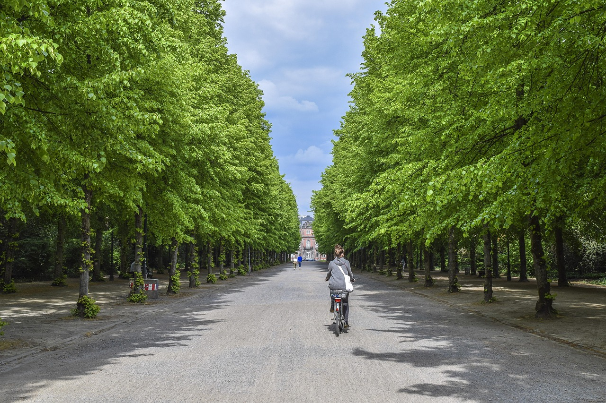
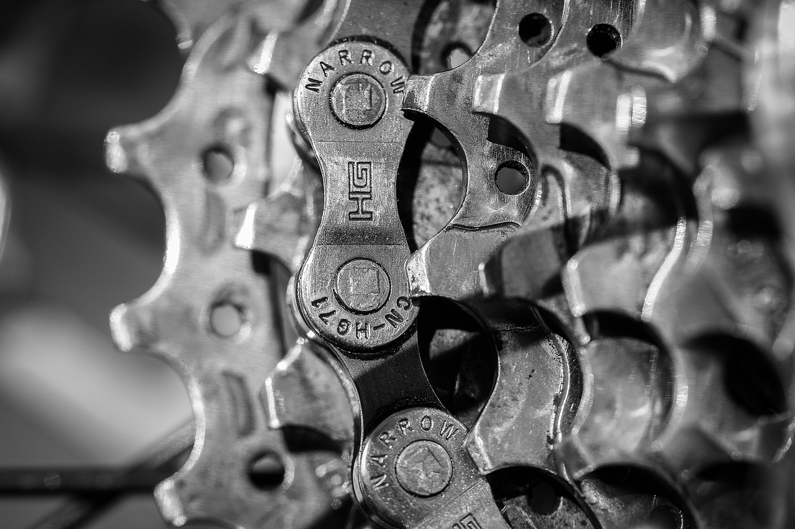

Bicikl i gradske teksture
Stock inspiracija · Dimhou / Pixabay

Za sljedeću vožnju, počnite razgovorom. Obratite se direktno Bike'n More.
Kontakt01 / Biciklistička priča

Bike'n More je biciklistička adresa u Podgorici. Pronađite ih u Ulici bratstva i jedinstva 55 ili se javite telefonom.
Za aktuelnu ponudu i dostupnost bicikala, pitajte direktno. Tako dobijate informacije koje su vam potrebne prije dolaska.
Pozovite Bike'n More02 / Izbliza
Lanac, zupčanici, upravljač. Izbliza, bicikl otkriva sasvim drugu perspektivu.
Ovaj fotografski izbor istražuje biciklizam. Za informacije o proizvodima i uslugama Bike'n More, javite se njihovom timu.
Otvorite foto dnevnik
03 / Vizuelne bilješke
Grad, otvoren put i detalji između. Izaberite temu. Otvorite fotografiju za bliži pogled.
6 fotografija
Sve fotografije u dnevniku su ilustrativne stock fotografije. Ne prikazuju proizvode, zaposlene, poslovnicu ili radove Bike'n More.